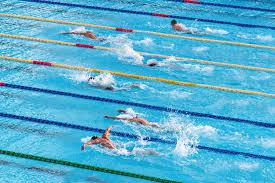
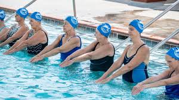

Resumen de la Natación
La natación es un deporte que consiste en desplazarse en el agua utilizando los brazos y las piernas. Es uno de los deportes más antiguos y se practica en diversas distancias y estilos.
Historia de la Natación
La natación ha sido parte de los Juegos Olímpicos modernos desde 1896 para hombres y desde 1912 para mujeres. Desde entonces, ha crecido en popularidad y número de eventos.
Reglas de la Natación
Las reglas de la natación incluyen el uso de técnicas específicas para cada estilo: libre, espalda, braza y mariposa. Los nadadores deben tocar la pared al final de cada largo.
Medallero en la Natación 2024
| Medalla | Atleta | País | Evento |
|---|---|---|---|
| Oro | Ana García | España | 100m Libre |
| Plata | John Smith | Estados Unidos | 100m Libre |
| Bronce | Li Wei | China | 100m Libre |
| Oro | Maria Lopez | Brasil | 200m Mariposa |
| Plata | David Brown | Reino Unido | 200m Mariposa |
| Bronce | Sofia Kim | Corea del Sur | 200m Mariposa |
Imágenes de Natación
 Video
Cuestionario
Minijuego: ¿Cuántos estilos de natación conoces?
Intenta adivinar el estilo de natación que he seleccionado al azar. Escribe tu respuesta y haz clic en "¡Adivinar!"